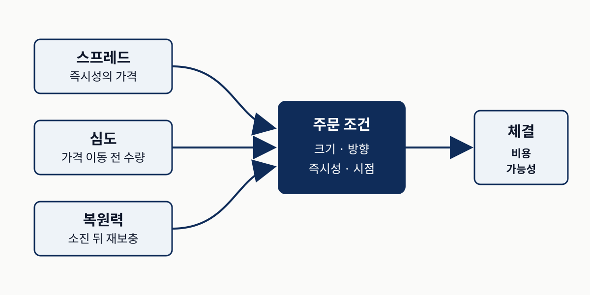
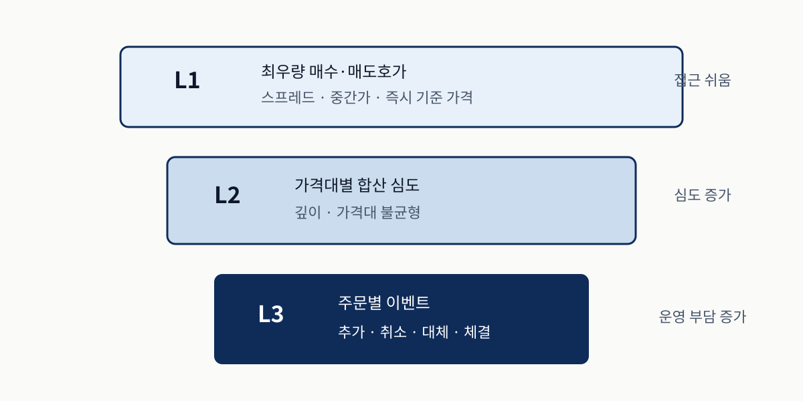
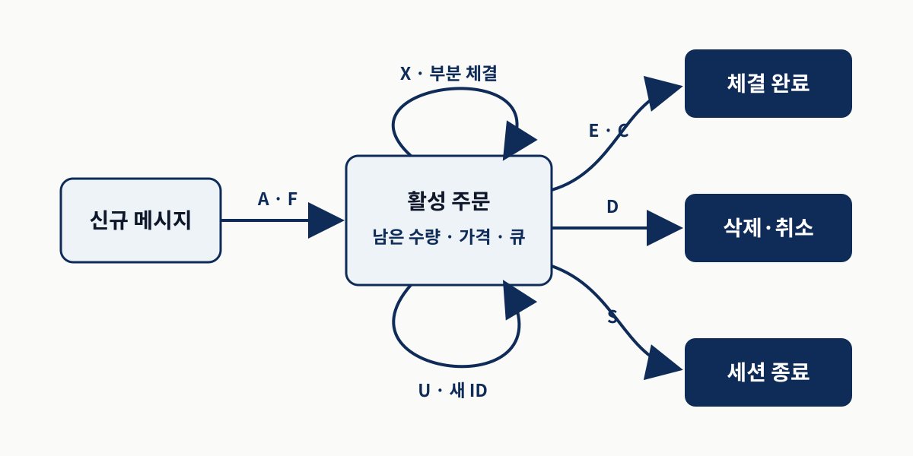
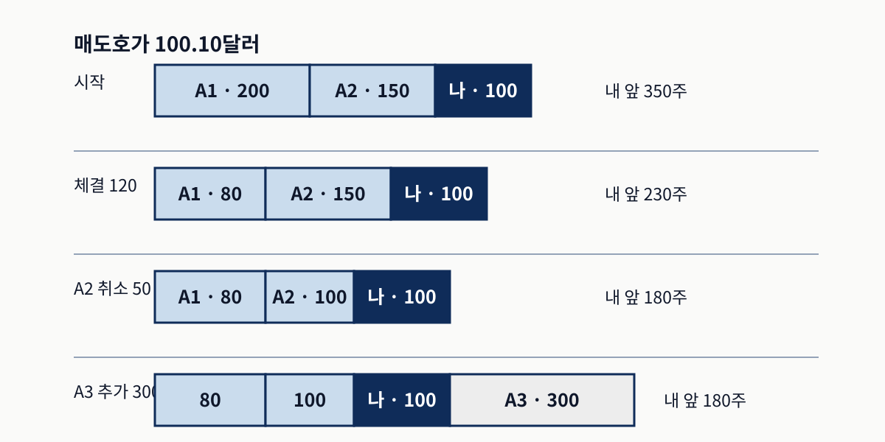
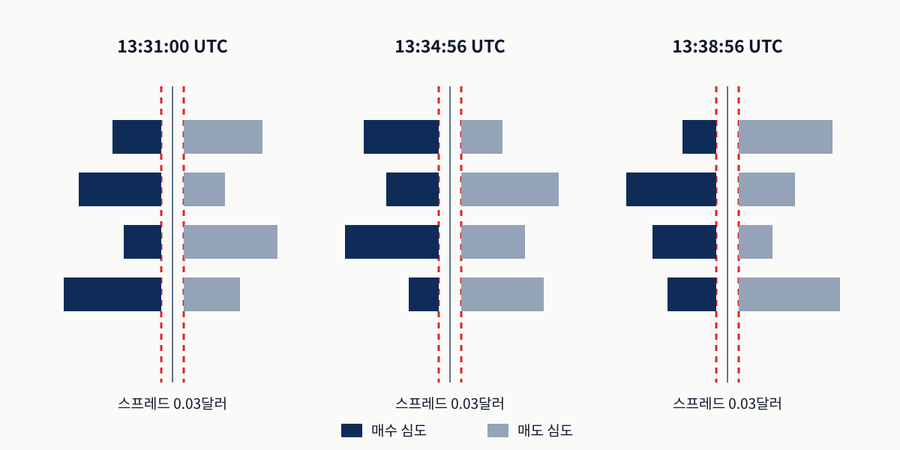
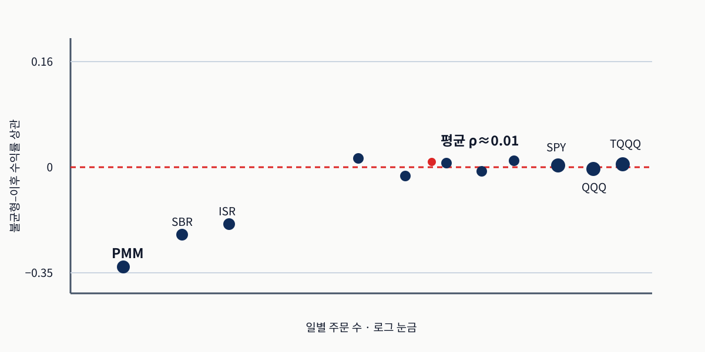
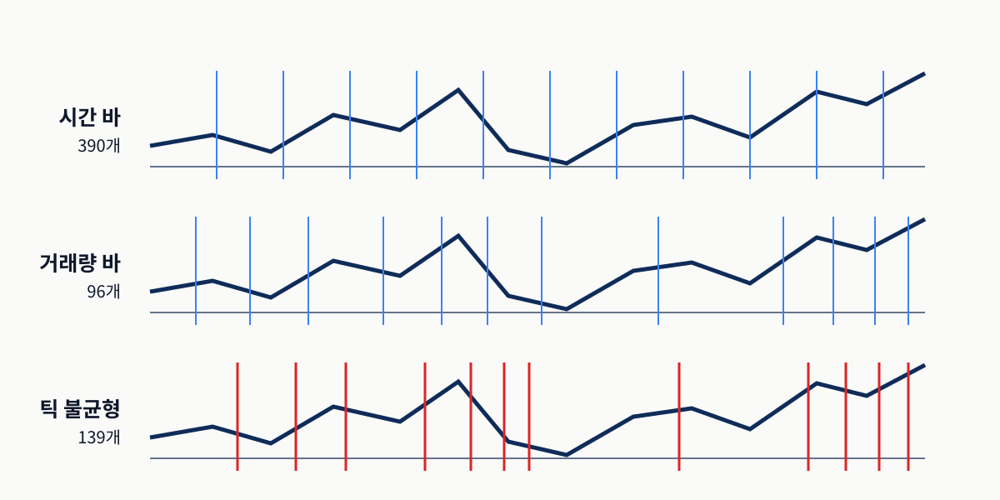
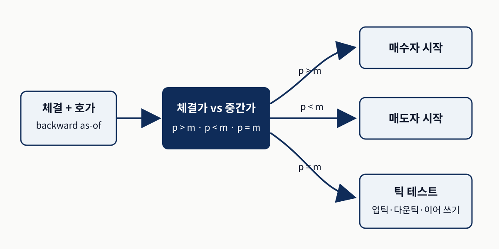
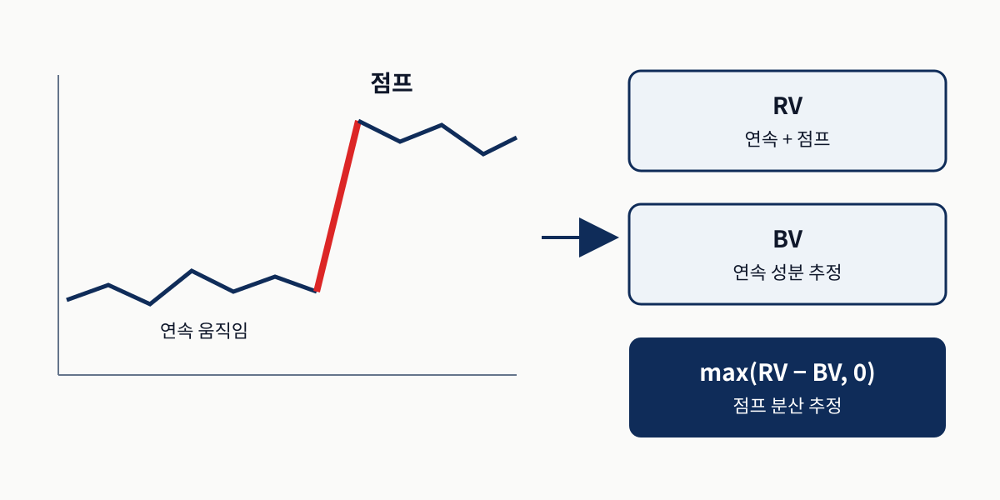
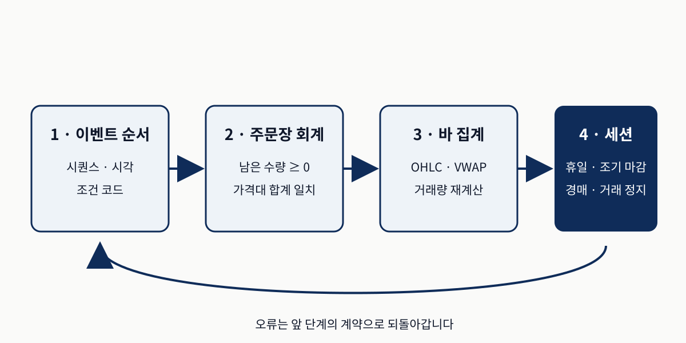

시장 미시구조
주문 이벤트에서 실행 가능한 연구 데이터까지
0. 시장 데이터는 거래 메커니즘의 기록입니다
20일 이동평균 돌파 전략이 일별 종가 백테스트에서 좋아 보여도 실제 매수는 보통 매도호가에서 체결되고, 주문이 크면 여러 가격대를 소진하며, 변동기에는 표시 심도가 취소로 사라집니다. 이 장은 이런 차이를 단순한 비용 항목으로 덧붙이지 않고 가격 형성 과정 자체로 다룹니다.
- 관측 — 어떤 피드와 가격을 쓰면 무엇을 볼 수 있고 무엇을 놓치는가?
- 상태 — 주문 이벤트를 어떻게 재생해야 믿을 수 있는 주문장 상태가 되는가?
- 측정 — 틱을 어떤 시계로 묶고 점프를 어떻게 분리해야 모델의 입력이 의미를 갖는가?
| 단계 | 핵심 질문 | 실패하면 생기는 문제 |
|---|---|---|
| 거래 규칙 | 누가 유동성을 공급·소비하는가? | 스프레드와 체결 가능성을 비용 한 줄로 축소 |
| 피드 선택 | L1·L2·L3·TAQ 중 무엇을 보는가? | 보이지 않는 큐·심도를 관측했다고 착각 |
| 상태 재구성 | 이벤트 순서와 수량 회계가 맞는가? | 잘못된 주문장 위에서 신호를 계산 |
| 표본추출 | 시계·활동·정보 중 무엇을 일정하게 둘까? | 표본마다 정보량이 달라 모델이 시간대를 학습 |
| 점프·세션 | 불연속 사건과 시간 경계를 분리했는가? | 가짜 수익률·잘못된 변동성·누출된 레이블 |
3.1 미시구조 (microstructure)가 가격 형성에 미치는 영향
스프레드·심도·복원력은 즉시 체결 비용, 거래 가능한 수량, 소진된 유동성이 돌아오는 속도를 각각 잽니다. 주문 유형과 장중 국면은 같은 가격 움직임의 경제적 의미를 바꿉니다.
유동성은 스프레드 하나가 아닙니다
스프레드는 즉시 체결의 가격이고, 심도는 가격이 움직이기 전에 거래할 수 있는 수량이며, 복원력은 소진된 호가가 다시 채워지는 속도입니다. 작은 신호는 스프레드를 이기지 못하고, 큰 주문은 심도와 복원력이 부족하면 주문장을 훑어 올라갑니다.

왼쪽의 세 척도를 따로 읽고 오른쪽 주문 조건과 결합합니다. 개념 관계를 새로 배치했으며 측정 결과를 뜻하지 않습니다. 근거: 원서 §3.1.유동성 공급자는 역선택과 재고 위험을 가격에 넣습니다
대기 지정가 주문은 유동성을 공급하고, 시장가 또는 공격적인 지정가 주문은 스프레드를 건너 유동성을 소비합니다. 공급자는 정보가 더 빠른 상대에게 체결될 역선택 위험과, 체결이 한쪽으로 몰려 포지션이 쌓이는 재고 위험을 부담합니다. 스프레드는 주문 처리비용뿐 아니라 이 두 위험의 보상입니다.
Kyle의 람다는 순주문 흐름에 가격이 얼마나 민감하게 반응하는지 나타냅니다. 그러나 짧은 지평의 가격 충격을 곧바로 수익 기회로 읽으면 안 됩니다. 실제 손익은 스프레드, 큐 위치, 체결 확률을 함께 통과해야 합니다.
주문 유형은 가격뿐 아니라 의도를 부호화합니다
시장가 주문은 즉시성을 사고, 대기 지정가 주문은 가격을 지키는 대신 체결을 기다립니다. 숨은·빙산 주문은 표시 수량보다 더 많은 유동성을 제공할 수 있고, 페그 주문은 중간가나 최우량 호가를 따라 움직이며, 포스트-온리 주문은 스프레드를 건너게 되면 거부되거나 재가격됩니다. 반복 체결과 호가 재보충은 숨은 유동성을 시사하지만 단독 증거는 아닙니다.
같은 신호도 개장·장중·마감에 다르게 읽습니다
개장은 밤사이 정보가 반영돼 변동성과 스프레드가 크고, 장중은 활동이 적어 스프레드가 좁아도 심도가 얕을 수 있으며, 마감은 기관 주문과 종가 경매가 거래량을 모읍니다. 원서의 13일 ITCH 표본에서 처음과 마지막 30분은 각각 하루 거래량의 약 15–17%, 장중 한 구간은 2.6%로 약 6배 차이가 납니다. 이는 해당 표본의 관찰이며 모든 종목·날짜의 고정 비율은 아닙니다.
근거: Jansen, Chapter 3, §3.1. Kyle (1985), Glosten and Milgrom (1985), Madhavan (2002), O'Hara (2015). 장중 비율은 공식 `06_itch_intraday_patterns`의 원서 보고값입니다.
3.2 현대 시장 데이터 피드의 구조
피드 선택은 전략 선택입니다. 더 깊은 데이터는 더 많은 상태를 보여 주지만 비용·지연·파싱·정합성 부담도 함께 키웁니다.
L1·L2·L3는 정보량과 숨기는 대상을 달리합니다

위에서 아래로 정보가 늘지만 운영 부담도 커집니다. L3는 한 거래 장소의 표시 주문 흐름을 보여 줄 뿐 숨은 주문과 다른 거래 장소를 포함하지 않습니다. 근거: 원서 §3.2.| 수준 | 보이는 것 | 가능한 분석 | 숨기는 것 |
|---|---|---|---|
| L1 | 최우량 매수·매도호가 | 스프레드·중간가·TAQ 신호 | 그 아래 심도·큐 |
| L2 / MBP | 가격대별 합산 수량 | 심도·가격대 불균형 | 개별 주문·큐 순서 |
| L3 / MBO | 개별 주문의 추가·수정·취소·체결 | 주문장 재생·취소·재보충 | 숨은 유동성·다른 거래 장소 |
| TAQ | 체결과 최우량 호가 | 중간 지평 신호·유동성 대용치 | 심도·주문 생애주기 |
중간가·마지막 체결가·종가는 서로 바꿔 쓸 수 없습니다
중간가는 최우량 매수·매도호가의 평균이라 짧은 지평의 가격 반응을 볼 때 매수-매도 반등을 줄여 줍니다. 마지막 체결가는 실제 거래를 기록하지만 거래 방향과 장소의 잡음이 섞입니다. 종가는 바의 마지막 체결가이거나 일별 자료에서는 종가 경매의 공식 가격일 수 있습니다. 신호는 중간가로 재더라도 손익 마크아웃은 매수 시 매도호가, 매도 시 매수호가처럼 체결 가능한 가격으로 평가해야 합니다.
이 장은 다섯 종류의 데이터 상품을 나란히 사용합니다
NASDAQ ITCH와 DataBento MBO는 L3, IEX HIST는 L2, AlgoSeek TAQ는 체결·NBBO, AlgoSeek 분봉은 61개 미시구조 열을 미리 계산한 파생 상품입니다. 같은 “틱 데이터”라는 이름 아래에서도 관측 범위와 내장 가정이 다릅니다.
프로토콜과 타임스탬프가 곧 데이터 품질입니다
ITCH·XDP·PITCH 같은 바이너리 직접 피드는 빠르지만 파싱이 필요하고, 암호화폐의 REST·WebSocket은 접근이 쉽지만 요청 제한·스키마 변화·거래소 간 시계 정렬 문제가 큽니다. 거래소 이벤트 시각, SIP 배포 시각, 벤더 처리 시각, 로컬 도착 시각을 구분하지 않으면 미래 호가를 과거 체결에 붙이는 선견 편향이 생길 수 있습니다.
직접 피드는 통합 피드보다 수백 마이크로초에서 한 자릿수 밀리초 먼저 도착할 수 있지만, 구체적 차이는 네트워크와 위치에 의존합니다. 단일 숫자를 보편적인 지연으로 사용하지 않습니다.
근거: Jansen, Chapter 3, §3.2. Holden et al. (2023), Aquilina et al. (2021). 공개 교재 링크는 참고문헌에 정리했습니다.
3.3 원시 메시지에서 지정가 주문장으로
주문장 재구성은 메시지를 상태로 바꾸는 회계입니다. 주문 레지스트리와 가격대 합계가 항상 일치해야 이후 스프레드·심도·불균형을 믿을 수 있습니다.
NASDAQ TotalView-ITCH는 하루 4억 건 규모의 주문 이벤트를 제공합니다
대표 표본일은 2020년 1월 30일입니다. 원시 파일은 4억 2,300만 메시지, 압축 해제 후 약 13GB입니다. 나노초 타임스탬프와 고정소수점 가격을 순차적으로 읽고 메시지 유형별 Parquet으로 저장합니다.
| 지표 | Python | Rust | 범위 |
|---|---|---|---|
| 벽시계 시간 | 약 23분 | 5분 미만 | 약 5–8배 가속 |
| 최대 메모리 | 약 8GB | 500MB 미만 | 약 16배 작음 |
이 수치는 하드웨어에 따라 달라지는 원서의 근삿값이며, 정밀한 다중 기기 Rust 벤치마크는 아직 제공되지 않았습니다. 성능 우열보다 두 구현이 같은 스키마와 BBO 시계열을 내는지 검증하는 것이 먼저입니다.
A·F·X·D·U·E·C 메시지가 주문의 생애를 바꿉니다

화살표는 메시지 유형, 상자는 주문 상태입니다. U는 기존 주문을 끝내고 새 참조를 만들므로 단순 수량 수정이 아닙니다. 원서 그림 3.1의 상태 관계를 새로 배치했습니다.주문 레지스트리는 주문 ID별 가격·방향·남은 수량을, 가격대 관점은 “101.23달러에 몇 주가 있는가”를 답합니다. A·F는 주문을 추가하고, X는 부분 취소, D는 삭제, U는 기존 주문 종료와 새 주문 참조 생성을 수행합니다. E는 주문 가격 체결, C는 별도 체결 가격을 포함합니다. P·Q는 거래 분석에는 쓰이지만 같은 방식의 주문장 갱신 이벤트는 아닙니다.
총 심도와 내 앞의 수량은 다릅니다

100.10달러에 A1 200주와 A2 150주가 내 주문보다 먼저 있습니다. A3 300주는 뒤에 들어오므로 총 심도는 늘지만 내 앞 수량은 180주로 유지됩니다. 공식 Primer의 계산 예를 새로 배치했습니다.불변 조건이 깨지면 주문장 특성 전체가 오염됩니다
- 수정·체결·취소 전에 주문 참조가 존재해야 합니다.
- 주문별·가격대별 남은 수량은 음수가 될 수 없습니다.
- 가격대 합계는 그 가격의 활성 주문 수량 합과 같아야 합니다.
- 스냅샷의 최우량 호가와 심도는 이벤트 기반 상태와 대조합니다.
재구성된 주문장은 시장 전체가 아니라 거래 장소 로컬입니다
NASDAQ ITCH는 Nasdaq의 표시 주문장입니다. 다른 거래소와 내부화·다크풀의 유동성은 보이지 않습니다. 로컬 최우량 매수호가가 통합 NBBO 매도호가보다 높아 보인다면 실제 분절화일 수도, 비동기 타임스탬프나 메시지 처리 버그일 수도 있으므로 거래 장소·시계·필터를 먼저 확인합니다.
스냅샷은 상태를 비교 가능한 관측값으로 바꿉니다

가운데 가격에서 왼쪽은 매수, 오른쪽은 매도 심도입니다. 원본 그림의 세 패널은 모두 스프레드 0.03달러입니다. 원서 캡션은 정규 세션이라 적지만 UTC 라벨을 뉴욕 시각으로 바꾸면 오전 8시대라 어느 표기가 잘못됐는지 확정할 수 없습니다. 원서 그림 3.2의 축과 관계를 단순화했습니다.주문 대부분은 체결보다 삭제·대체로 끝납니다
| 지표 | 개수·비율 |
|---|---|
| 주문 추가 이벤트(A + F) | 186,610,705 |
| 삭제 이벤트(D) | 180,285,101 |
| 부분 취소 이벤트(X) | 4,990,972 |
| 대체 이벤트(U) | 36,777,372 |
| 체결 이벤트(E + C) | 8,555,084 |
| 삭제 이벤트가 있는 고유 주문 | 172,764,815 |
| 최소 한 번 체결된 고유 주문 | 6,258,508 |
| 삭제 이벤트 / 추가 이벤트 | 96.6% |
| 체결 주문 / 추가 이벤트 | 3.4% |
96.6%는 삭제 이벤트 수를 추가 이벤트 수로 나눈 값입니다. “삭제 이벤트가 있는 고유 주문”을 분자로 쓰면 약 92.6%입니다. 원서는 취소율을 주문 생애주기 기준으로 설명하면서 표에는 이벤트 비율을 적었으므로 둘을 같은 통계로 섞지 않습니다. 부분 체결 뒤 삭제될 수 있어 취소율과 체결률도 여집합이 아닙니다.
순진한 불균형은 약하고 체결가 수익률은 스프레드에 오염됩니다

가로축은 활동 수준, 세로축은 불균형과 이후 수익률의 상관입니다. 평균 ρ≈0.01, 표준편차≈0.10, 범위 −0.35~0.16입니다. 대표 라벨과 요약 통계만 재배치했으며 전체 41개 점의 정확한 좌표를 복제한 그림은 아닙니다. 원서 그림 3.3.1초 지평의 양의 상관은 매매 규칙이 아닙니다. 이 지평에서는 스프레드와 큐가 손익을 지배합니다. 또 체결이 매수호가와 매도호가 사이를 번갈아 오가면 효율적 가격이 거의 움직이지 않아도 체결가 수익률에 음의 1차 자기상관이 생깁니다. 짧은 지평의 레이블은 중간가와 체결 가능 가격 마크아웃을 함께 검토해야 합니다.
실습 · 합성 이벤트로 주문 잔량과 바 경계를 확인
가이드 노트북 `src/ch03/03_chapter_guide.ipynb`의 실행 완료 셀은 단일 종목·거래소·세션의 합성 이벤트를 사용합니다. 실제 ITCH 바이너리 파서나 큐 매칭 엔진을 재현한 결과는 아닙니다.
orders[event.order_id] = event.shares
displayed_shares = sum(orders.values())
if cumulative_value >= threshold:
bars.append(cumulative_value)
cumulative_value = 0.0 # 문턱을 넘긴 뒤 새 바에서 다시 누적기록 출력: 주문 추가·부분 취소·체결 뒤 잔량 불변 조건과 문턱 통과 후 누적값 초기화를 확인해 PASS: order lifecycle quantities and reset-on-crossing bar boundaries를 출력했습니다.
이 출력은 상태 회계와 경계 규칙의 최소 예를 검증합니다. 원서의 4억 건 ITCH 통계나 DataBento 바 결과를 재실행한 증거로 사용하지 않습니다.
실행 상태: stored-output · Python 3.12.3 · 노트북 셀 16 · 교재 저장소 revision c579bc67.근거: Jansen, Chapter 3, §3.3, 그림 3.1–3.3, 표 3.1–3.2. 큐 예시는 공식 Primer를 사용했습니다.
3.4 표본추출의 기술
바는 저장 형식이 아니라 측정 설계입니다. 경계를 시계·거래 활동·방향성 정보 중 어디에 두는지에 따라 표본의 통계적·경제적 의미가 달라집니다.
시간·틱·거래량·달러 바는 서로 다른 양을 일정하게 둡니다

위에서 아래로 고정 시계, 누적 거래량, 방향 불균형 문턱입니다. 활동이 많은 구간일수록 활동·정보 기반 표본이 촘촘합니다. 원서 그림 3.4의 바 수와 관계를 새로 배치했습니다.시간 바는 “다음 5분”처럼 의사결정 지평이 시계 시간일 때 자연스럽지만 표본당 정보량이 고르지 않습니다. 틱 바는 거래 건수, 거래량 바는 주식 수, 달러 바는 거래 금액을 일정하게 둡니다. 달러 바는 가격 수준에 자연스럽게 맞지만 기업행위 조정이 가격과 수량에 어떻게 적용됐는지 확인해야 합니다.
정보 기반 바는 공격자 방향을 요구합니다
DataBento처럼 공격자 방향을 직접 주는 피드도 있지만 ITCH 거래 메시지는 방향을 주지 않습니다. 호가가 있으면 Lee-Ready가 체결가를 그 시점의 중간가와 비교하고, 중간점 거래만 틱 테스트로 보완합니다. 호가 정렬이 틀리면 미래 또는 오래된 중간가를 써서 방향이 조용히 오염됩니다.

첫 단계의 backward as-of 정렬이 핵심입니다. 피드의 시간 의미에 따라 보수적 지연이 필요할 수 있습니다. 공식 Primer와 원서 §3.4를 바탕으로 새로 배치했습니다.| 방법 | 적용 범위 | 정확도 | 조건 |
|---|---|---|---|
| Lee-Ready | 100% | 94.7% | 정렬된 최우량 호가 필요 |
| 연속 틱 테스트 | 100% | 80.0% | 마지막 0이 아닌 방향 유지 |
| 0이 아닌 틱만 | 19% | 90.0% | 가격이 변한 거래만 분류 |
기간은 2024-11-04부터 2024-11-08까지입니다. 원서는 뒤 본문에서 틱 테스트를 약 78%라고도 적습니다. 표의 80.0%와 같은 측정인지 설명하지 않으므로 리포트와 슬라이드에서는 표의 80.0%를 주값으로 사용하고 78%는 원서의 별도 서술로 남깁니다.
불균형 바는 누적 부호 흐름이 기대 문턱을 넘을 때 닫힙니다
틱 불균형 바는 거래 방향 (b_t\in\{+1,-1\})을 더하고, 거래량 불균형 바는 (b_t q_t\)를 더합니다. 런 바는 연속된 동일 방향의 길이가 아니라 바 안의 누적 매수·매도 건수 중 큰 쪽을 셉니다.
균형 흐름에서 우변이 0에 가까워지는 식은 절댓값 기대치의 정확한 항등식이 아니라 문턱 설정용 근사입니다. 실제 바 길이는 누적 경로와 EWMA 상태에 의존합니다.
| 종목 | 매수 비율 | E[T] 드리프트 α=0.1 | E[T] 드리프트 α=0.001 |
|---|---|---|---|
| NVDA | 47% | 17.5배 | 0.98배 |
틱 수준에서 α=0.1은 최근 불균형을 너무 빠르게 반영해 문턱을 키우는 양의 되먹임을 만들 수 있습니다. 작은 α, 충분한 준비 바, 기대 불균형 드리프트 모니터링이 필요하며 고정 문턱은 이 적응형 피드백을 피하는 대안입니다.
더 낮은 Jarque-Bera가 곧 더 나은 전략을 뜻하지는 않습니다
| 바 유형 | 시계 | 일정하게 두는 양 | 전형적 용도 |
|---|---|---|---|
| 시간 | 달력 | 시간 간격 | 시계 시간 예측 |
| 틱 | 활동 | 거래 건수 | 동일 거래 빈도 |
| 거래량 | 활동 | 주식·계약 수 | 규모 기반 활동 |
| 달러 | 활동 | 거래 금액 | 일반 ML 출발점 |
| 틱 불균형 | 정보 | 부호 거래 건수 | 방향 압력 |
| 거래량 불균형 | 정보 | 부호 거래량 | 규모별 정보 흐름 |
| 런 | 정보 | 한쪽 누적 우세 | 지속적 한쪽 흐름 |
| 바 유형 | 개수 | JB | 시차 1 자기상관 |
|---|---|---|---|
| 시간 1분 | 390 | 609.0 | −0.023 |
| 거래량 1만 주 | 96 | 1.9 | 0.026 |
| 달러 300만 달러 | 102 | 2.2 | −0.027 |
| 틱 불균형 | 139 | 22.6 | 0.057 |
| 틱 런 | 455 | 12.5 | −0.007 |
| 바 유형 | 개수 | JB | 시차 1 자기상관 |
|---|---|---|---|
| 시간 1분 | 390 | 132.8 | 0.014 |
| 틱 500건 | 390 | 58.8 | −0.061 |
| 거래량 5만 주 | 380 | 2.3 | −0.017 |
| 달러 500만 달러 | 519 | 33.0 | 0.039 |
| 거래량 불균형 | 691 | 51.0 | 0.035 |
Jarque-Bera는 왜도와 첨도를 합쳐 정규성에서의 이탈을 재는 통계량입니다. 낮은 값은 이 표본에서 정규분포에 더 가깝다는 뜻이지 수익률, 예측 정확도, 거래 가능성이 더 높다는 뜻이 아닙니다. 체결만 있고 호가가 없다면 달러 또는 거래량 바가 방어 가능한 출발점이며, 방향 오분류 민감도를 따로 검증하지 않았다면 불균형·런 바를 피합니다.
근거: Jansen, Chapter 3, §3.4, 그림 3.4, 표 3.3–3.7. 표본별 기간·문턱·방향 레이블을 서로 섞지 않았습니다.
3.5 일중 수익률에서 가격 점프 탐지하기
실현 분산에는 연속적인 확산과 불연속 점프가 함께 들어 있습니다. 이중거듭제곱변동과 국소 변동성으로 둘을 분리하면 꼬리·레이블·변동성 국면을 더 정직하게 설명할 수 있습니다.
실현 분산에서 이중거듭제곱변동을 빼 점프 분산을 추정합니다
\(RV_d\)는 하루의 로그 수익률 제곱을 모두 더해 연속 성분과 점프를 함께 담습니다. \(BV_d\)는 이웃한 절댓값을 곱해 하나의 큰 수익률이 자기 제곱으로 합을 지배하는 효과를 줄입니다. 유한 표본에서는 큰 값의 영향이 완전히 사라지는 것은 아닙니다.

왼쪽은 개념적 수익률 경로, 오른쪽은 분산 분해입니다. 측정 차트가 아니라 수식의 계산 대상을 설명하는 도식입니다. 근거: 원서 §3.5.Lee-Mykland는 각 바를 직전의 국소 변동성으로 표준화합니다
\(L_i\)는 현재 바가 최근의 평소 움직임보다 몇 배 큰지를 묻습니다. \(K=12\)면 식은 곱 10개, 수익률 11개를 사용합니다. 원서 본문이 “직전 K개 수익률”이라고 표현한 부분과 식의 범위가 다르므로 구현에서는 식과 코드의 인덱스를 우선 확인합니다.
하루 78개 5분 바, 유의수준 α=0.01에서 검벨 분포 기반 임계값은 약 5.10입니다. \(K\)는 국소 변동성 창을 정하지만 이 임계값 계산에는 직접 들어가지 않습니다. 세션 안에서만 창을 만들기 때문에 첫 \(K-1\)개 바는 검사할 수 없습니다.
2020년 표본에서 점프는 드물지만 마감과 사건일에 몰렸습니다
| 종목 | 연율화 연속 변동성 | 실현 분산 중 점프 비중 | 점프가 있는 종목-일 |
|---|---|---|---|
| AMD | 45% | 6.8% | 24% |
| AMZN | 30% | 10.4% | 31% |
| FB | 34% | 6.2% | 34% |
표본은 2020년 3월의 시장 혼란을 포함합니다. 점프 비중을 정상 상태의 장기 상수로 일반화하지 않습니다. 검정 가능한 창에서 표시된 점프의 27%가 마지막 30분에 발생했습니다. 개장 첫 30분의 0건은 준비 창 때문에 검사하지 못한 결과이지 “개장에는 점프가 없다”는 발견이 아닙니다.
하루 표준편차 하나는 스트레스 날에는 과소, 조용한 날에는 과잉 탐지합니다
| 종목 | Lee-Mykland | 단순 4σ | 겹침 |
|---|---|---|---|
| AMD | 70 | 55 | 2 |
| AMZN | 103 | 48 | 6 |
| FB | 109 | 49 | 6 |
점프 자체가 하루 표준편차를 끌어올리면 큰 바가 문턱을 못 넘고, 조용한 날에는 작은 표준편차 때문에 경계값에도 반응합니다. 국소 이중거듭제곱 변동성은 일중 모양을 따라가면서 큰 이웃의 영향을 줄입니다.
점프는 레이블 조건과 변동성 국면을 위한 특성이 됩니다
공식 노트북은 종목-일별로 jump_count, signed_jump_var, jump_variance, jump_share를 저장합니다. 이 열은 점프 직후 구간을 레이블에서 제외하거나 연속형·점프형 변동성 국면을 나누는 데 사용됩니다. 수익 신호의 성과를 직접 입증하는 출력은 아닙니다.
근거: Jansen, Chapter 3, §3.5와 공식 `18_algoseek_jump_detection`. 수치는 원서의 저장 출력이며 이번 작업에서 대용량 AlgoSeek 노트북을 재실행하지 않았습니다.
3.6 미시구조 데이터 품질과 세션화
고빈도 오류는 극단값보다 관계의 불일치로 나타납니다. 순서·상태·집계·세션 경계를 단계마다 다시 검증해야 합니다.
이벤트 순서는 타임스탬프와 시퀀스를 함께 봅니다
종목·거래 장소별 스트림에서 타임스탬프가 단조 증가하는지 확인하고, 같은 시각은 피드 시퀀스로 정렬합니다. 시퀀스는 순서, 타임스탬프는 이벤트 시각이라는 역할을 구분합니다. 늦은 보고·정정·경매·비표준 체결은 조건 코드를 보고 분석 목적에 맞게 제외합니다.
파싱·재구성·집계 뒤에 서로 다른 불변 조건을 적용합니다

각 단계의 출력이 다음 단계 입력이므로 뒤에서 통과했다고 앞 단계 오류가 사라지지 않습니다. 원서 §3.6의 검사 순서를 새로 배치했습니다.- 체결·호가: 양의 가격·수량, 호가 단위, 불가능한 스프레드, 오래된 호가와 피드 중단을 구분합니다.
- 주문장: 음의 심도 없음, 생애주기 일관성, 락·크로스의 허용 상태를 문서화합니다.
- 바: 거래량은 구성 체결 수량 합, VWAP은 수량 가중 평균, OHLC는 정의의 첫·최대·최소·마지막 값과 같아야 합니다.
- 세션: 휴일·조기 마감·서머타임·경매·거래 정지를 거래소 현지 시각으로 처리합니다.
널과 극단값의 의미는 데이터 계약에서 결정됩니다
2020-03-16 AAPL은 중앙값 스프레드 2.4bp, 일중 변동폭 9.9%로 스트레스 사건을 보입니다. 반면 AlgoSeek NASDAQ-100 분봉은 04:00–20:00 ET를 연속으로 만들기 때문에 거래 없는 연장 시간 바에서 체결 필드가 20–23% 널이지만 호가 필드는 널이 아닙니다. 전자는 실제 유동성 사건이고 후자는 상품 계약에 따른 구조적 빈값입니다.
틱·호가의 기본 처리는 보간이 아니라 표시와 제외입니다. 보간은 거래가 없던 곳에 활동을 만들어 이벤트 스트림과 일관성을 깨뜨립니다. 윈저화나 삭제를 한다면 규칙과 영향을 감사 추적에 남깁니다.
근거: Jansen, Chapter 3, §3.6, 공식 `11_algoseek_taq_eda`, `13_algoseek_minute_bars_eda`의 원서 보고값.
3.7 요약
매칭 규칙을 이해해야 데이터의 뜻을 정하고, 피드의 한계를 알아야 관측 범위를 정하며, 상태와 경계를 검증해야 모델이 배울 수 있는 표본이 됩니다.
미시구조는 실행 비용을 마지막에 얹는 장이 아닙니다. 어떤 가격을 목표로 삼고, 어떤 피드를 수집하며, 어떤 주문장 상태를 재구성하고, 어떤 바 경계를 사용할지 정하는 측정의 출발점입니다. 순진한 불균형 상관이나 더 낮은 Jarque-Bera를 바로 수익으로 번역하지 않고 체결 가능 가격·큐·표본 조건을 함께 확인합니다.
- 종가 백테스트의 수익을 실제 체결에서 깎는 스프레드·심도·큐·취소는 각각 어떤 메커니즘인가?
- 단일 거래 장소의 매수호가가 통합 NBBO 매도호가보다 높게 보일 때 버그와 실제 분절화를 어떻게 구별할까?
- 체결만 있고 호가가 없다면 왜 정보 기반 바보다 달러 바가 더 방어 가능한 출발점인가?
다음 장들은 여기서 만든 주문장·바·점프·세션 산출물을 특성, 레이블, 시뮬레이션과 거래비용 모델에 사용합니다. 파싱과 표본추출은 준비 작업이 아니라 이후 결론의 허용 범위를 정합니다.
근거: Jansen, Chapter 3, §3.7.
핵심 용어
| 용어 | 이 장에서의 의미 |
|---|---|
| 스프레드·심도·복원력 | 즉시 체결 비용·가격 이동 전 거래 가능 수량·소진 후 재보충 속도 |
| BBO·NBBO | 거래 장소별 최우량 호가·보호 거래소를 통합한 전국 최우량 호가 |
| MBO·MBP | 주문별 이벤트·가격대별 합산 심도 |
| 큐 위치 | 같은 가격에서 내 주문보다 먼저 체결되어야 하는 수량과 순서 |
| 매수-매도 반등 | 체결이 스프레드 양쪽에서 번갈아 찍혀 생기는 기계적 평균회귀 |
| Lee-Ready | 그 시점 호가 중간점과 틱 테스트로 공격자 방향을 추정하는 절차 |
| 불균형·런 바 | 부호 흐름 또는 한쪽 누적 우세가 문턱을 넘을 때 닫는 정보 기반 바 |
| 이중거듭제곱변동 | 이웃 수익률 절댓값 곱으로 연속 분산을 추정하는 점프 견고 척도 |
| 세션화 | 거래소 현지 시각과 캘린더로 관측을 올바른 거래일·세션에 배정하는 일 |
원문·코드와 참고 자료
- Stefan Jansen, Machine Learning for Trading, 3rd ed., Chapter 3 “Market Microstructure” (2026).
- 영문 원문 3장 · 한국어 번역 · 한국어 해설판
- 3장 소스·데이터·재현 가이드 · 공식 코드 안내
- Lee and Ready (1991), Barndorff-Nielsen and Shephard (2004), Lee and Mykland (2008), Cont, Kukanov, and Stoikov (2014).
- 공식 Primer: 주문장 큐 우선순위, 매수-매도 반등, 거래 부호 판정. Primer의 모순된 예시는 해설판의 정오 설명을 따랐습니다.
리포트의 수치 표는 원서와 저장 출력의 범위를 재구성했습니다. 대용량 ITCH·DataBento·AlgoSeek 노트북을 이번 작업에서 다시 실행하지 않았으며, 가이드 노트북의 합성 이벤트 실험만 저장 출력을 확인했습니다.